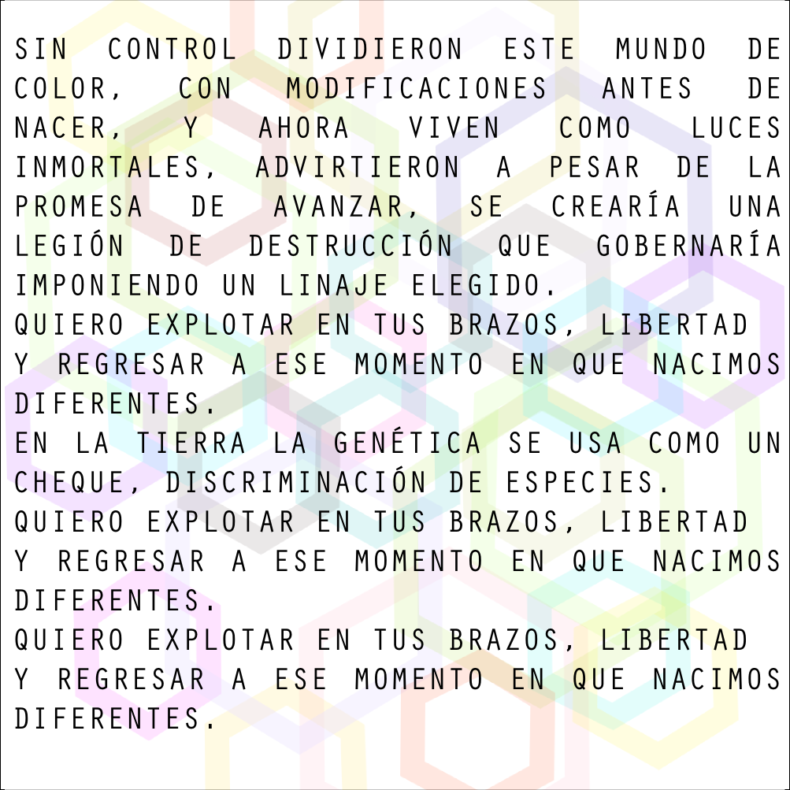
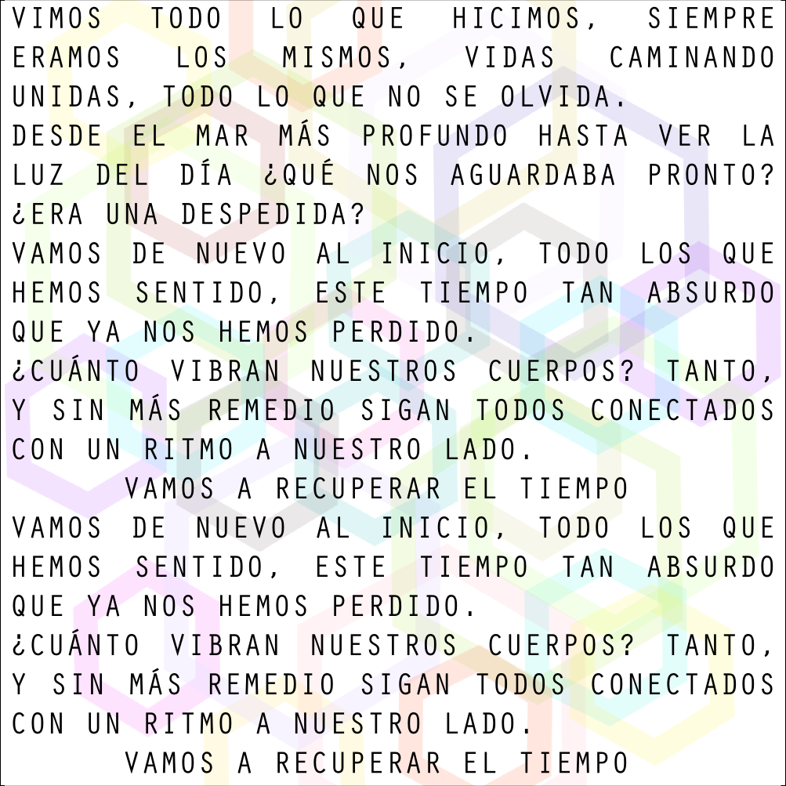
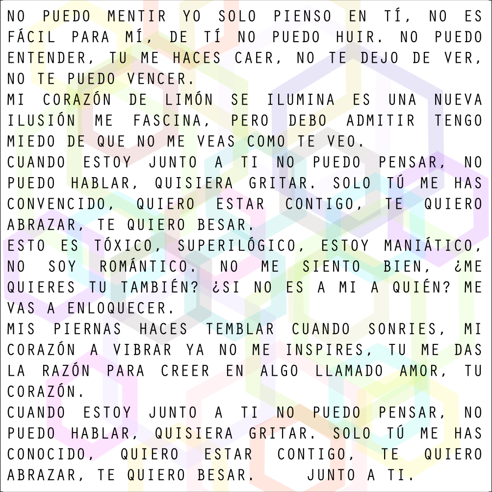

Opus Yeah
Letras de SuperIlógico
Toca una imagen para abrirla en tamaño completo.
-
01. Diferentes

-
02. Recuperar el tiempo

-
03. SuperIlógico

Opus Yeah
Toca una imagen para abrirla en tamaño completo.


